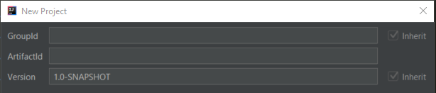
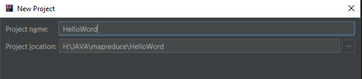
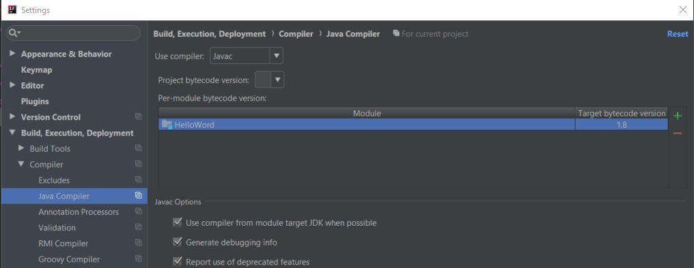
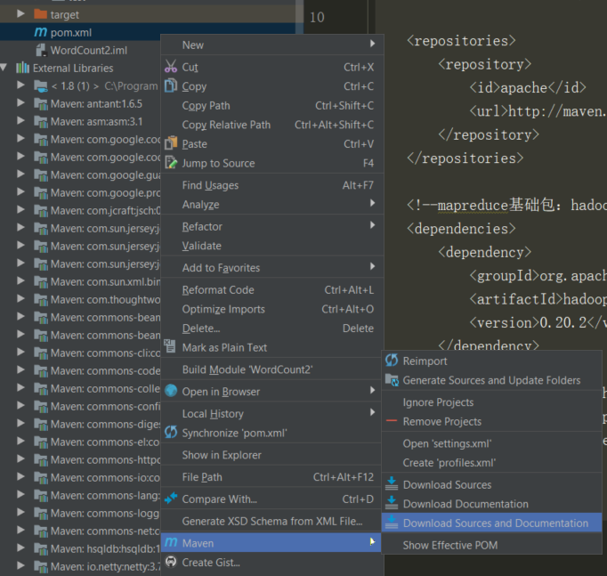
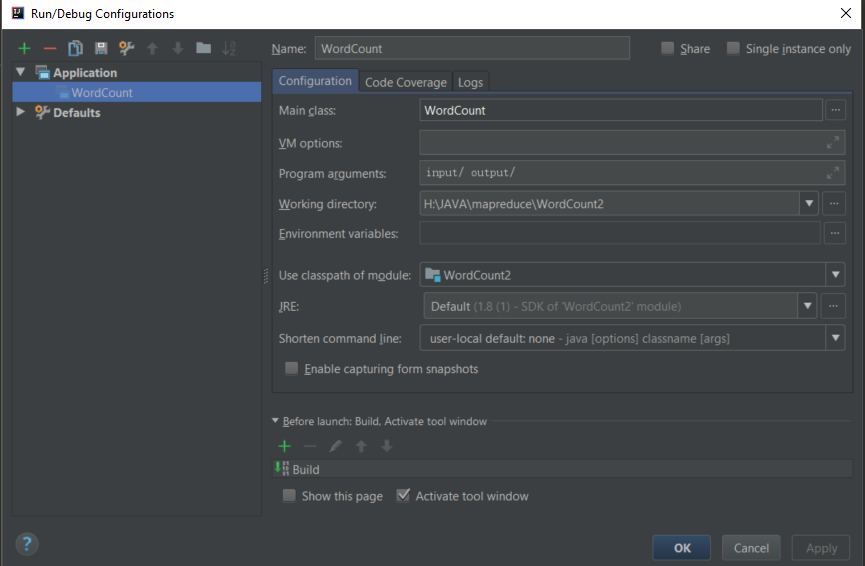
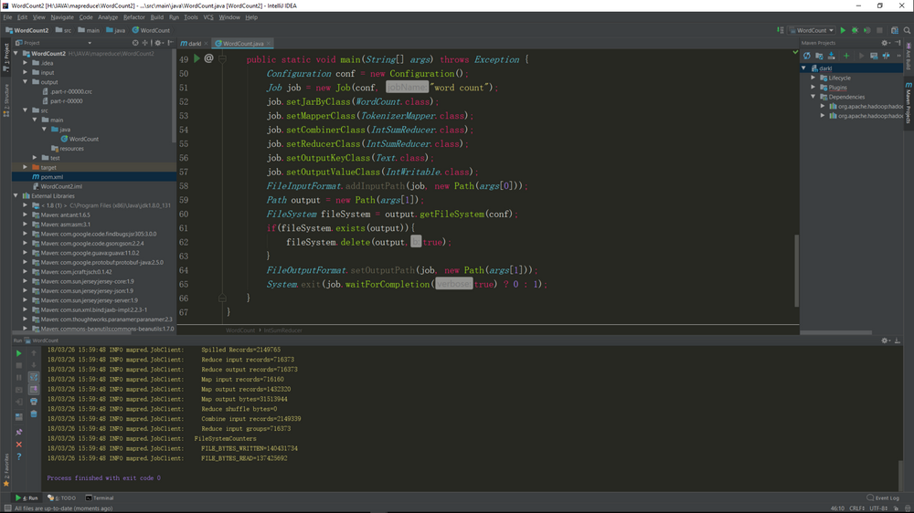

环境搭建
1、首先是IDEA
2、新建maven project。GroupId ArtifactId随便写，然后是项目名，finish。然后打开File->settings->Build,Execution,Deployment->Complier->Java Complier,将项目目标版本修改为你对应的版本，我电脑是jdk1.8。

3、修改左侧项目栏里的pom.xml文件。1
2
3
4
5
6
7
8
9
10
11
12
13
14
15
16
17
18
19
20
21
22
23
24
25
26
27
28
29
30
31
32
33
34
35
36
37<?xml version="1.0" encoding="UTF-8"?>
<project xmlns="http://maven.apache.org/POM/4.0.0"
xmlns:xsi="http://www.w3.org/2001/XMLSchema-instance"
xsi:schemaLocation="http://maven.apache.org/POM/4.0.0 http://maven.apache.org/xsd/maven-4.0.0.xsd">
<modelVersion>4.0.0</modelVersion>
<groupId>com.darkl</groupId>
<artifactId>darkl</artifactId>
<version>1.0-SNAPSHOT</version>
<!-- 添加apache源 -->
<repositories>
<repository>
<id>apache</id>
<url>http://maven.apache.org</url>
</repository>
</repositories>
<!--mapreduce基础包：hadoop-core、hadoop-common-->
<!-- windows环境下使用hadoop-core1.2.1会有文件权限错误，这里直接使用0.20.2 -->
<!-- 版本很重要，对mapreduce代码有影响 -->
<!-- 读写HDFS：hadoop-hdfs、hadoop-client依赖 -->
<!-- 读写HBase：hbase-client依赖 -->
<dependencies>
<dependency>
<groupId>org.apache.hadoop</groupId>
<artifactId>hadoop-core</artifactId>
<version>0.20.2</version>
</dependency>
<dependency>
<groupId>org.apache.hadoop</groupId>
<artifactId>hadoop-common</artifactId>
<version>2.7.2</version>
</dependency>
</dependencies>
</project>
等待maven下载依赖，如果不好使，下载不了依赖，将maven源换为ali源。打开你的用户目录下的.m2文件夹（我的C:\Users\674.m2），替换或者添加文件settings.xml1
2
3
4
5
6
7
8
9
10
11
12
13
14
15
16
17
18
19
20
21
22<settings xmlns="http://maven.apache.org/SETTINGS/1.0.0"
xmlns:xsi="http://www.w3.org/2001/XMLSchema-instance"
xsi:schemaLocation="http://maven.apache.org/SETTINGS/1.0.0
https://maven.apache.org/xsd/settings-1.0.0.xsd">
<localRepository/>
<interactiveMode/>
<usePluginRegistry/>
<offline/>
<pluginGroups/>
<servers/>
<mirrors>
<mirror>
<id>alimaven</id>
<name>aliyun maven</name>
<url>http://maven.aliyun.com/nexus/content/groups/public/</url>
<mirrorOf>central</mirrorOf>
</mirror>
</mirrors>
<proxies/>
<profiles/>
<activeProfiles/>
</settings>
然后重新下载

编译wordcount程序
在src->main->java新建WordCount程序。我的程序修改了一部分，core0.20.2里使用new Job(conf,”name”)创建mapreduce任务。以及判断输出路径是否存在存在就删除存在的输出文件。1
2
3
4
5
6
7
8
9
10
11
12
13
14
15
16
17
18
19
20
21
22
23
24
25
26
27
28
29
30
31
32
33
34
35
36
37
38
39
40
41
42
43
44
45
46
47
48
49
50
51
52
53
54
55
56
57
58
59
60
61
62
63
64
65
66
67
68
69
70import java.io.IOException;
import java.util.StringTokenizer;
import org.apache.hadoop.conf.Configuration;
import org.apache.hadoop.fs.FileSystem;
import org.apache.hadoop.fs.Path;
import org.apache.hadoop.io.IntWritable;
import org.apache.hadoop.io.Text;
import org.apache.hadoop.mapreduce.Job;
import org.apache.hadoop.mapreduce.Mapper;
import org.apache.hadoop.mapreduce.Reducer;
import org.apache.hadoop.mapreduce.lib.input.FileInputFormat;
import org.apache.hadoop.mapreduce.lib.output.FileOutputFormat;
public class WordCount {
public static class TokenizerMapper
extends Mapper<Object, Text, Text, IntWritable> {
private final static IntWritable one = new IntWritable(1);
private Text word = new Text();
public void map(Object key, Text value, Context context
) throws IOException, InterruptedException {
StringTokenizer itr = new StringTokenizer(value.toString());
while (itr.hasMoreTokens()) {
word.set(itr.nextToken());
context.write(word, one);
}
}
}
public static class IntSumReducer
extends Reducer<Text, IntWritable, Text, IntWritable> {
private IntWritable result = new IntWritable();
public void reduce(Text key, Iterable<IntWritable> values,
Context context
) throws IOException, InterruptedException {
int sum = 0;
for (IntWritable val : values) {
sum += val.get();
}
result.set(sum);
context.write(key, result);
}
}
public static void main(String[] args) throws Exception {
Configuration conf = new Configuration();
Job job = new Job(conf, "word count");
job.setJarByClass(WordCount.class);
job.setMapperClass(TokenizerMapper.class);
job.setCombinerClass(IntSumReducer.class);
job.setReducerClass(IntSumReducer.class);
job.setOutputKeyClass(Text.class);
job.setOutputValueClass(IntWritable.class);
FileInputFormat.addInputPath(job, new Path(args[0]));
// 判断输出文件是否存在
Path output = new Path(args[1]);
FileSystem fileSystem = output.getFileSystem(conf);
if(fileSystem.exists(output)){
fileSystem.delete(output,true);
}
FileOutputFormat.setOutputPath(job, new Path(args[1]));
System.exit(job.waitForCompletion(true) ? 0 : 1);
}
}
在项目的根目录下新建input文件夹，放入输入文件。之后配置run configuration，新建一个Application配置，配置main class 为WordCount，program arguments添上输入输出文件路径，完成。
可能出现的问题
没有chmod程序，我直接使用了git的chmod程序，将chmod文件夹的路径添加到系统环境变量里就好了。或者可以下载cywin64，使用它的chmod.exe
环境搭建完成。